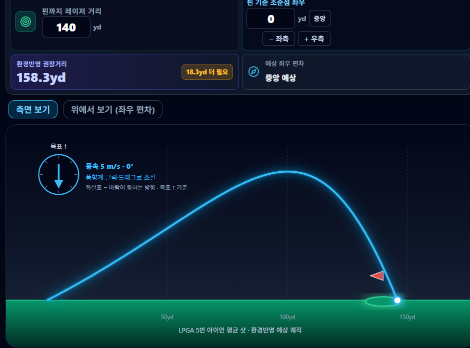
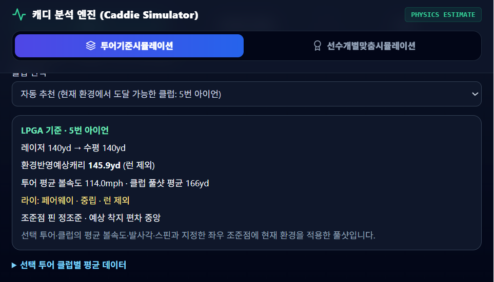
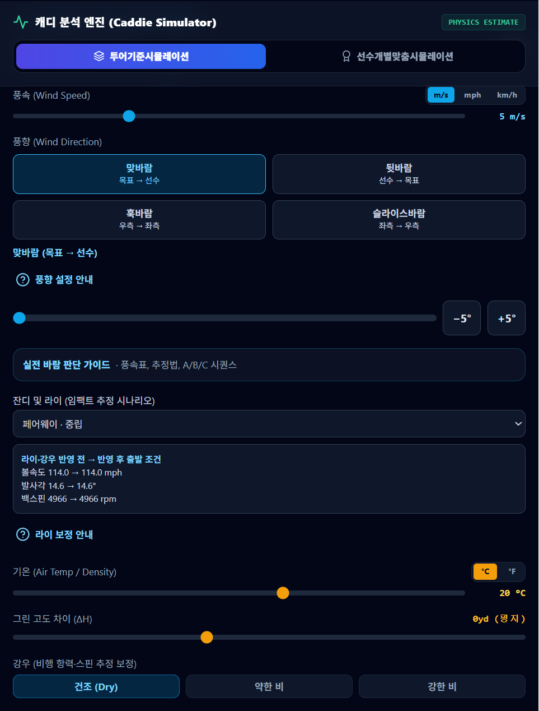
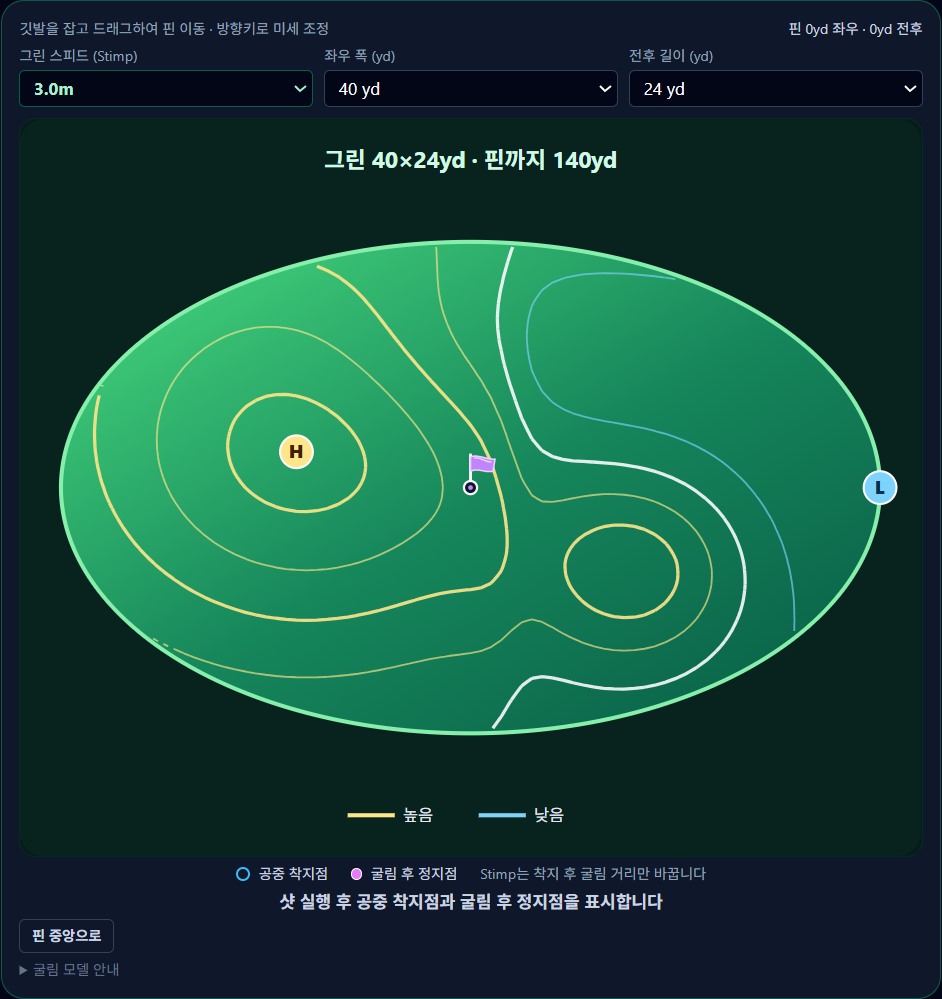
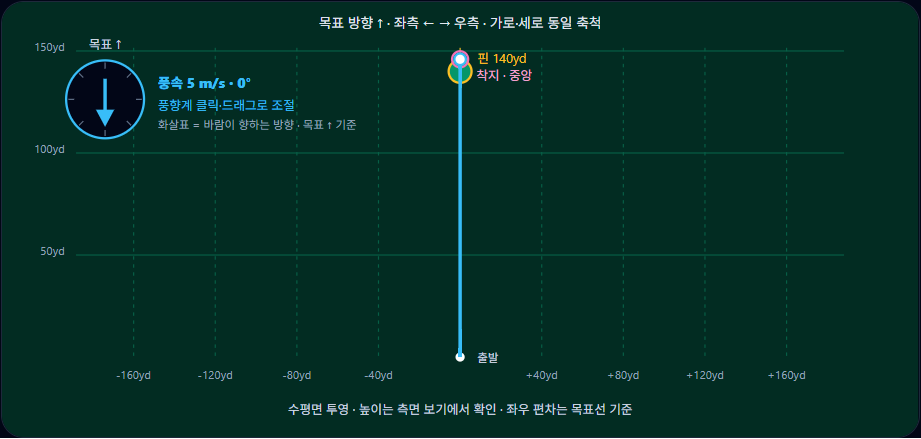

SY-SDE · SHOT DISTANCE ESTIMATOR
원본 문서 · ORIGINAL EDITIONSY-Shot Distance Estamater
샷거리 시뮬레이터 사용설명서
투어 평균 또는 선수 개인의 발사 데이터에 바람·기온·고도·강우·라이 조건을 적용해, 목표 핀까지의 권장 캐리와 예상 궤적·좌우 편차·그린 위 굴림을 추정하는 물리 기반 샷 시뮬레이터 안내서
SY-SDE · OFFICIAL WEBSITE
샷거리 시뮬레이터 바로가기
https://soonyongchun-dotcom.github.io/putting-training/shot-distance-simulator/dist/index.html물리 추정 기반 골프 샷거리 시뮬레이터 · 앱 상단 거리 단위 옆 책 모양 아이콘으로 이 설명서를 열 수 있습니다
CHAPTER 01
개요와 화면 구성
SY-Shot Distance Estamater는 공개된 투어 평균 발사 데이터(TrackMan 기준) 또는 선수 개인이 입력한 클럽별 발사 데이터에 볼 비행 물리 모델을 적용해, 현재 환경에서 목표 핀을 공략하기 위한 권장 캐리와 예상 궤적·좌우 편차·그린 위 굴림을 추정하는 시뮬레이터입니다. 결과는 기준 자료와 모델 가정에 따른 추정치이며 실측 보장값이 아닙니다.
거리 단위 줄의 미터(m)/야드(yd) 버튼으로 모든 거리·높이의 입력과 표시 단위를 전환합니다. 단위를 바꿔도 저장된 실제 거리는 유지됩니다. 오른쪽 위 한국어/English 버튼으로 시뮬레이터 전체 표시 언어를 전환할 수 있으며, 선택한 언어는 이 기기에 저장됩니다. 거리 단위 줄 오른쪽 끝 책 아이콘은 이 사용설명서를 새 탭으로 엽니다.

화면 왼쪽(또는 위쪽)에는 목표 요약 카드 4종 — 핀까지 레이저 거리 · 핀 기준 조준점 좌우 · 환경반영 권장거리 · 예상 좌우 편차 — 와 궤적 화면이, 오른쪽(또는 아래쪽)에는 캐디 분석 엔진과 환경 설정 패널이 배치됩니다.
기본 사용 순서
- 언어·단위·모드 선택: 오른쪽 위에서 한국어/English를, 거리 단위 줄에서 미터/야드를 고르고, 투어기준시뮬레이션 또는 선수개별맞춤시뮬레이션을 선택합니다.
- 목표 입력: 핀까지 레이저 거리와 핀 기준 조준점 좌우 이동을 입력합니다.
- 환경 입력: 풍속·풍향, 기온, 그린 고도 차이, 강우, 잔디·라이를 설정합니다.
- 그린·핀 설정: 위에서 보기에서 그린 크기·스피드(Stimp)와 핀 위치를 조정합니다.
- 결과 확인: 환경반영 권장거리와 상세 결과를 읽고, “샷 실행”으로 궤적·착지·굴림을 재생합니다.
CHAPTER 02
시뮬레이션 모드와 클럽 선택

캐디 분석 엔진에서 모드·투어·클럽을 선택하면 아래 결과 카드에 레이저→수평 거리, 환경반영예상캐리(런 제외), 적용 볼속도, 라이, 조준점과 예상 착지 편차가 요약됩니다.
투어기준시뮬레이션
- LPGA·PGA: TrackMan이 공개한 투어 평균 클럽 스피드·볼 스피드·발사각·백스핀·캐리·최고 높이를 사용합니다. 갭/샌드/로브 웨지(GW·SW·LW)는 피칭 웨지 기반 추정입니다.
- KLPGA: 공식 평균이 아니라 LPGA 대비 볼·클럽속도 97%, 캐리·높이 96%를 가정한 전체 추정입니다.
- 클럽 선택: 드라이버부터 로브 웨지까지 직접 고르거나 자동 추천을 사용합니다. 자동 추천은 현재 환경에서 목표에 도달 가능한 클럽만 역산해 선택하며, 표시 샷의 속도·조준은 바꾸지 않습니다. 목표가 최장 클럽 범위를 넘으면 경고와 함께 최장 클럽의 평균 샷을 표시합니다.
선수개별맞춤시뮬레이션
- 클럽별로 기준 캐리, 클럽 스피드, 볼 스피드, 발사각, 백스핀, 최고 높이, 스핀축을 입력할 수 있습니다. 입력값은 이 기기(브라우저)에만 저장되며 서버로 전송되지 않습니다.
- 기준 캐리는 무풍·20°C·평지의 런 제외 거리로 입력하세요. 캐리 또는 높이를 입력하면 개인 발사 데이터에 맞춰 항력·양력이 재보정되고, 모두 비어 있으면 투어 공력 모델에 입력 발사 데이터를 적용합니다.
- 클럽 스피드는 참고용이며 비행 계산은 볼 스피드를 사용합니다. “이 클럽 개인 입력 지우기”로 투어 평균을 복원할 수 있습니다.
- 라이·강우 보정은 두 모드 모두에 적용되므로, 개인 입력은 라이·강우 보정 전의 기준 샷으로 입력하세요.
CHAPTER 03
목표·조준 설정
- 핀까지 레이저 거리: 거리측정기로 잰 직선 거리를 입력합니다(50~350yd 범위, 선택 단위로 입력). 그린 고도 차이를 입력하면 레이저 거리와 고도 차이로 수평 거리를 역산해 계산에 사용합니다. 레이저 거리는 핀 고도 차이보다 커야 합니다.
- 핀 기준 조준점 좌우: 핀을 기준으로 조준점을 좌우로 옮기는 거리입니다. 음수는 좌측, 양수는 우측이며, 키보드에 음수 기호가 없으면 − 좌측 / + 우측 버튼으로 1단위씩 조절하고 “중앙” 버튼으로 0으로 되돌립니다.
- 핀 위치·높낮이와 선택한 조준점은 실제 궤적과 착지 편차 계산에 반영됩니다.
- 환경 설정의 “목표 그린 레이저 거리” 슬라이더로도 같은 값을 조절할 수 있습니다.
CHAPTER 04
환경 설정 · 바람, 기온, 고도, 강우, 라이

환경 패널에서 바람·라이·기온·고도·강우를 설정하면 결과와 궤적이 즉시 다시 계산됩니다. “라이·강우 반영 전 → 반영 후 출발 조건”에서 보정된 볼속도·발사각·백스핀을 확인할 수 있습니다.
바람
- 풍속: 슬라이더로 조절하고 m/s · mph · km/h 단위를 전환할 수 있습니다.
- 풍향 빠른 선택: 맞바람(목표→선수) · 뒷바람(선수→목표) · 훅바람(우측→좌측) · 슬라이스바람(좌측→우측)의 네 버튼을 조합해 선택합니다. 아래 풍향 슬라이더와 −5°/+5° 버튼으로 1° 단위 각도도 지정할 수 있습니다.
- 풍향계 직접 조절: 궤적 화면 안의 풍향계를 클릭·드래그해 조절합니다. 화살표는 바람이 향하는 방향(목표 ↑ 기준)이며, 키보드 방향키로 1°, Shift+방향키로 15°씩 조정할 수 있습니다.
기온·고도·강우
- 기온: 공기밀도 계산에 사용합니다(°C/°F 전환). 기온이 낮을수록 공기가 무거워져 캐리가 줄어듭니다.
- 그린 고도 차이(ΔH): 선수 위치 대비 그린(착지 지점)의 높이 차이입니다. 해발고도 입력이 아니며, 공기밀도는 해수면 표준기압과 선택 기온 기준입니다.
- 강우: 건조/약한 비/강한 비 3단계로, 비행 항력 +3%/+8%, 초기 스핀 −5%/−15%의 추정 시나리오를 적용합니다.
잔디 및 라이 (임팩트 추정 시나리오)
| 라이 | 적용 보정 |
|---|---|
| 페어웨이 · 중립 | 기준 라이. 볼속도·발사각·스핀을 변경하지 않습니다. |
| 페어웨이 · 순결 | 스핀 20% 감소(제시 범위 15–25%의 중간값). 착지 후 런 증가 가능성. |
| 페어웨이 · 역결 | 볼속도 3% 감소(제시 범위 2–4%의 중간값). |
| 러프 · 약간 잠김 (25% / 플라이어) | 스핀 35% 감소, 발사각 +2°(모델 가정). 런 증가 가능성이 있으나 캐리 증가는 보장하지 않습니다. |
| 러프 · 반쯤 잠김 (50%) | 볼속도 6% 감소, 스핀 50% 감소. |
| 러프 · 완전히 잠김 (100%) | 볼속도 15% 감소, 발사각 −3°, 스핀 50% 감소(모델 가정). 고정 거리 손실을 강제하지 않고 클럽·샷별로 계산합니다. |
라이 보정은 기준 모델 보정 이후 임팩트 볼속도·발사각·스핀에 한 번만 적용하며 강우 스핀 계수와 곱합니다.
CHAPTER 05
그린·핀 설정과 굴림 모델

“위에서 보기”를 선택하면 비행 평면도 아래에 그린 확대 지도가 나타납니다. 깃발을 드래그하거나 방향키로 핀 위치를 옮기고, “핀 중앙으로”로 되돌립니다.
- 그린 스피드(Stimp): 2.0~4.0m에서 선택하며 착지 후 굴림 거리만 바꿉니다.
- 그린 크기: 좌우 폭 20~60yd, 전후 길이 12~40yd를 선택합니다.
- 등고선 지도: 등고선 간격은 4cm(선 사이 높이 차)입니다. 노란선은 높은 지역(H), 파란선은 낮은 지역(L)을 나타내는 모식 지형이며 실측 그린이 아닙니다.
- 핀 위치: 핀 위치와 그 지점의 높낮이가 샷의 조준 목표와 착지 조건에 반영되며, 위치를 옮기면 지형에 따라 굴림 거리도 달라질 수 있습니다.
- 착지·굴림 표시: 샷 실행 후 공중 착지점과 굴림 후 정지점을 지도에 표시하고, 공 정지점↔핀 직선거리와 굴림 거리를 안내합니다. 공중 착지가 그린 밖이면 굴림을 계산하지 않고, 굴림 중 그린을 벗어나면 경계까지의 굴림과 이탈 지점에서 핀까지 거리를 표시합니다.
CHAPTER 06
결과 읽기와 샷 실행
두 가지 핵심 거리의 구분
| 표시 | 의미 |
|---|---|
| 환경반영 권장거리 (투어 모드) | 현재 환경에서 목표를 맞추기 위해 필요한 평지 기준 캐리입니다. 맞바람이면 목표보다 커지고 뒷바람이면 작아집니다. 옆의 배지가 선택 클럽 평균과의 차이(“○yd 더 필요” 등)를 알려줍니다. |
| 환경반영예상캐리 (상세 결과·선수개별 모드) | 선택한 클럽 풀샷(또는 개인 입력 샷)에 현재 환경을 적용했을 때의 목표선 방향 수평 캐리(런 제외)입니다. |
궤적 화면

측면 보기는 높이·비행 모양과 최고 높이를, 위에서 보기는 목표선 기준 좌우 편차를 가로·세로 동일 축척의 수평면 투영으로 보여줍니다.
- 샷 실행 (Launch Shot): 계산된 궤적을 애니메이션으로 재생하고, 위에서 보기의 그린 지도에 공중 착지점과 굴림 후 정지점을 표시합니다. “리셋”으로 애니메이션을 초기화합니다.
- 상세 결과: 수평 캐리(Carry) · 최고 높이(Apex) · 체공 시간(Hang Time) · 낙하 각도(Landing)를 표시합니다.
- 예상 좌우 편차: 착지 지점의 목표선 기준 좌우 편차를 요약 카드와 조준 요약에 표시합니다.
CHAPTER 07
실전 바람 판단 가이드
풍향 설정 아래 “실전 바람 판단 가이드”를 펼치면 다음 참고 자료가 제공됩니다.
- 풍속별 관찰 단서: 보포트 풍력 계급의 지상 관측(깃발·나뭇가지 움직임 등)을 2 m/s 구간으로 묶어 풍속을 가늠하는 표입니다.
- 잔디 드리프트 기록법: 마른 잔디를 어깨·얼굴 높이(약 1.5m)에서 던지지 말고 놓아, 옆 이동을 같은 방식으로 3회 관찰해 2회 이상 비슷할 때만 경향으로 기록하는 공통 기준입니다. 이동 거리를 풍속 수치로 환산하지 마세요.
- 시합 현장 4단계 바람 추정법과 선수별 바람 결정 시퀀스(데이터 중심 Pattern A · 직관 중심 Pattern B 등)를 안내합니다.
- 실전 비거리 보정 참고: 풍속 1 m/s ≈ 2.24 mph 환산과 함께, 맞바람·뒷바람 보정은 샷별 편차가 큰 참고값이고 옆바람은 신뢰할 수 있는 고정 환산값을 제시하기 어렵다는 점을 설명합니다.
CHAPTER 08
산출 방식과 한계, 문제 해결
산출 방식 요약
- 기준은 무풍·20°C·해수면·평지·중립 페어웨이 캐리(런 제외)입니다. 공개 캐리·최고 높이에 클럽별 항력·양력을 보정해 사용합니다.
- 예상캐리는 목표선 방향 수평 성분이며 좌우 편차는 별도 표시합니다. 목표 높이의 수평면과 하강 궤적의 교점을 착지로 봅니다.
- 부분 샷 추천 역산은 동일 발사각·스핀을 가정합니다. 자동 추천은 클럽만 선택하며 표시 샷의 속도·조준은 바꾸지 않습니다.
모델이 반영하지 않는 것
실제 경사면·중간 지형·습도·볼 온도·난류·돌풍·지면 런(그린 밖)은 반영하지 않으며, 실제 TrackMan 비행 엔진이나 실측 예측 정확도를 보증하지 않습니다. 상세 가정은 앱 하단 “산출 방식과 한계”에서 확인하세요.
문제 해결
| 증상 / 메시지 | 확인할 것 |
|---|---|
| “레이저 거리는 핀 고도 차이보다 커야 합니다.” | 그린 고도 차이(ΔH)가 레이저 거리보다 크게 입력되지 않았는지 확인하세요. |
| “샷이 그린 높이의 하강 착지점에 도달하지 못했습니다.” | 목표 고도가 너무 높거나 클럽 거리가 부족한 경우입니다. 클럽·환경을 조정하세요. |
| 자동 추천 범위 초과 경고 | 목표가 최장 클럽 평균보다 멉니다. 표시 궤적은 최장 클럽의 평균 샷입니다. |
| 개인 클럽 데이터를 불러오지 못했다는 안내 | 브라우저 저장 데이터가 손상된 경우로, 투어 평균이 표시되며 새로 입력하면 저장 데이터가 교체됩니다. |
| 입력값이 되돌아감 | 각 입력의 허용 범위(예: 레이저 거리 50~350yd, 기준 캐리 20~400yd)를 벗어나면 적용되지 않습니다. |